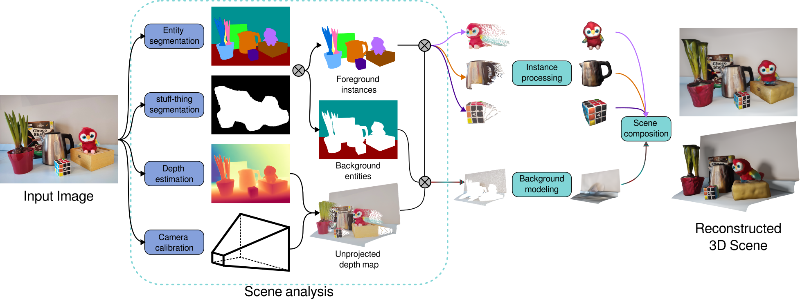

Results
Input image
Reconstructed scene (interactive)
Components
Scenes
Friedrich-Alexander-Universität Erlangen-Nürnberg
Single-view 3D reconstruction is currently approached from two dominant perspectives: reconstruction of scenes with limited diversity using 3D data supervision or reconstruction of diverse singular objects using large image priors. However, real-world scenarios are far more complex and exceed the capabilities of these methods. We therefore propose a hybrid method following a divide-and-conquer strategy. We first process the scene holistically, extracting depth and semantic information, and then leverage an object-level method for the detailed reconstruction of individual components. By splitting the problem into simpler tasks, our system is able to generalize to various types of scenes without retraining or fine-tuning. We purposely design our pipeline to be highly modular with independent, self-contained modules, to avoid the need for end-to-end training of the whole system. This enables the pipeline to naturally improve as future methods can replace the individual modules. We demonstrate the reconstruction performance of our approach on both synthetic and real-world scenes, comparing favorable against prior works.
Our method takes as input a single RGB image and predicts the full 3D scene reconstruction represented as a collection of triangle meshes. First, we parse the image of the scene by finding the composing instances, and estimating the depth and camera parameters. Then, we separate the identified entities in stuff (amorphus shapes) and things (characteristic shapes). To recover the full view of each object, we perform amodal completion on the masked crops of the instances. Each object is reconstructed individually in a normalized space and aligned to the view space using the scene layout guides from the depth map. Importantly, we address the differences in focal length, principal point, and camera-to-object distance between the two spaces through reprojection. Finally, we model the background as the surface that approximates the stuff entities collectively.

@inproceedings{Ardelean2025Gen3DSR,
title={Generalizable 3D Scene Reconstruction via Divide and Conquer from a Single View},
author={Ardelean, Andreea and Özer, Mert and Egger, Bernhard},
booktitle = {International Conference on 3D Vision (3DV)},
year={2025}
}
This work was funded by the German Federal Ministry of Education and Research (BMBF), FKZ: 01IS22082 (IRRW). The authors are responsible for the content of this publication. The authors gratefully acknowledge the scientific support and HPC resources provided by the Erlangen National High Performance Computing Center (NHR@FAU) of the Friedrich-Alexander-Universität Erlangen-Nürnberg (FAU) under the NHR project b112dc IRRW. NHR funding is provided by federal and Bavarian state authorities. NHR@FAU hardware is partially funded by the German Research Foundation (DFG) – 440719683.